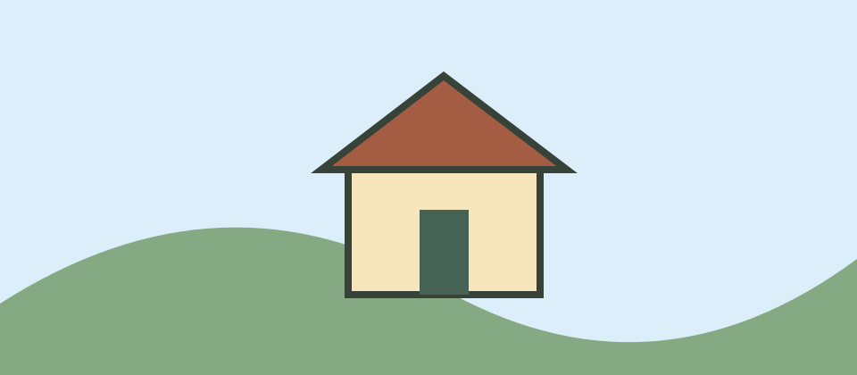

Visita al Parque del Molino
Recorré el sendero y conocé el molino al final del camino.
El recorrido
Duración: 40 minutos.

Parada finalCómo llegar
Entrá por la avenida del Parque y seguí los carteles hacia el molino.
Horarios
Último ingreso: 17:30.